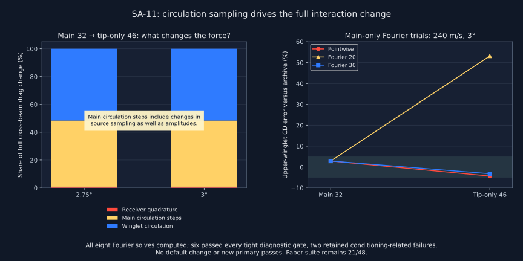

Primary SA-11 comparison · Earlier localization and tip-only control
The earlier study located large finite-origin wake changes near the main tip. This follow-up keeps the full wake field: large receiver-spacing terms cancel between the finite-origin and half-wake contributions. At 2.75° and 3°, receiver quadrature contributes only 0.90% of the full cross-beam drag change. Main circulation steps contribute about 47.5% and winglet circulation about 51.6%.
The main-step contribution includes discrete circulation sampling and jump locations; it is not solely a change in smooth loading. These percentages apply to the main-wing/winglet vortex interaction at fixed incidence, not every drag term or the prior equal-lift comparison.
An independent replay of the unchanged winglet control-point equations recovers the saved circulation to floating-point precision. Outer-main forcing drives the 2.87–2.89% winglet circulation change, with a small opposing interior contribution. Stall leakage is negligible, and the conditional winglet matrix has condition number 9.94.
Eight new trials keep the same main 32 / tip-only 46 meshes, with 20 or 30 Fourier modes on the main wing and pointwise winglets. All compute without Mach rejection. Six pass every tight numerical diagnostic; the two main-32 / 30-mode cases retain failed reconstruction and conditional-replay gates associated with a poorly conditioned basis.
| Main intervals | Main modes | CD error | Local flow defect | Numerical diagnostic |
|---|---|---|---|---|
| 32 | 20 | +2.88% | 0.245% | Pass |
| 32 | 30 | +2.89% | 0.095% | Two failed numerical checks retained |
| 46 | 20 | +53.15% | 26.044% | Pass |
| 46 | 30 | -3.19% | 3.851% | Pass |
The main-46 / 20-mode result has a tiny projected residual but a 26% local flow defect and 53.15% drag error. This distinguishes satisfying the weighted Fourier equations from resolving local flow. No representation or mesh is selected as a replacement.
Primary score remains 21/48. Native generating mesh and mode settings are still unknown. Source equations, inputs, defaults and tolerances are unchanged.

Download plot · All results, failed checks and provenance
Observed 2026-11-08T22:54:25.761966+00:00. Small serial jobs with one BLAS thread; no browser or background solver tests.